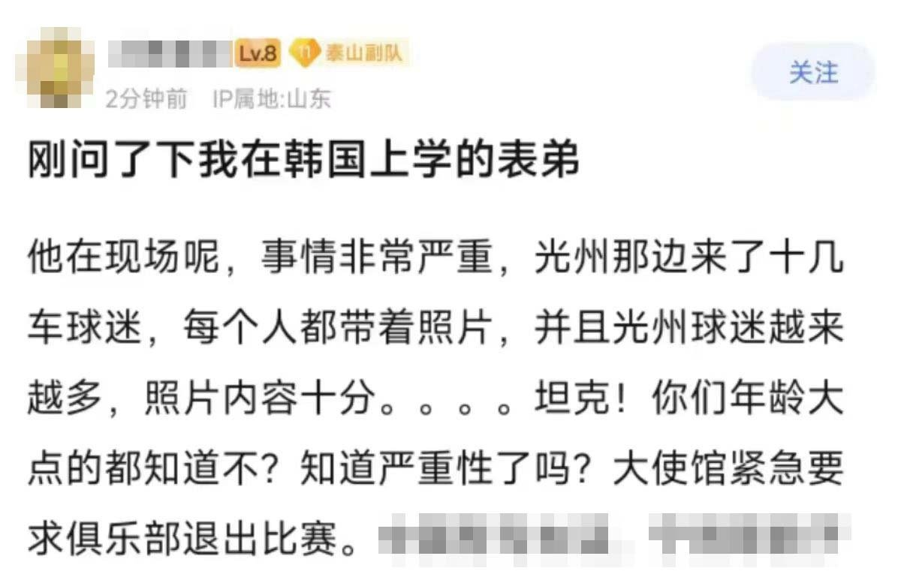

Minokakay （日雌泰补色诺
@Minokakay
当你身上的梗比对方多时，就不要嘲弄对方😁

中國警告🇺🇦 Alert Cina
@AlertCina
2025年02月20日,亚冠山东泰山队2月11日主场迎战韩国光州足球队. 大陆球迷举出 全斗焕。
第二场光州球迷拟举“8964”“六四坦克”照片在主场对阵时抗议回应,比赛开始前2小时,中共使馆急忙下令山东泰山队退赛。
臭鱼对烂虾,很工整. 臭鱼 被判刑监禁。烂虾 逍遥法外。8964会被年轻人 大量搜索.下回举金正恩 https://t.co/aNWTFMy1iO